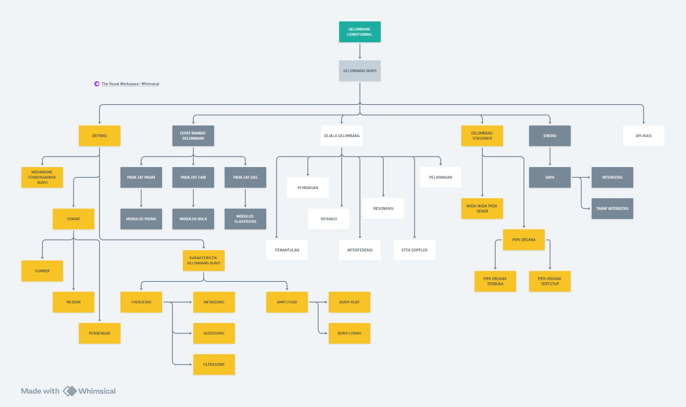

Dengarkan suara berikut, apakah suaranya terdengar?
Bagus. Selamat datang, agen baru. Kamu baru saja menyetujui perjanjian untuk bergabung dengan Tim SAR WaveUp. Saya komandan Andri, Komandan tim SAR WaveUp! Dalam operasi ini, kamu akan belajar bagaimana suara dapat menjadi petunjuk penyelamatan nyawa.
Sebelum kita mulai misi pertama, kamu harus menguasai materi prasyarat yaitu Gelombang & Getaran. Kemudian setelah mengikuti misi gelombang bunyi ini, diharapkan kamu akan mampu:
- 3.10.1 Menjelaskan pengertian gelombang bunyi
- 3.10.2 Mengidentifikasi karateristik gelombang bunyi
- 3.10.3 Menganalisis perbedaan bunyi berdasarkan tinggi-rendahnya bunyi, kualitas/warna bunyi dan kuat lemahnya bunyi
- 3.10.4 Menganalisis nada-nada daan frekeunsi gelombang bunyi pada dawai, pipa organa terbuka, dan pipa organa tertutup
- 3.10.5 Menganalisis cepat rambat gelombang bunyi pada medium zat padat, gas, cair
- 3.10.6 Mengidentifikasi gejala-gejala gelombang bunyi pada kehidupan sehari-hari
- 3.10.7 Menganalisis energi, intensitas, dan taraf intensitas pada gelombang bunyi
- 3.10.8 Menganalisis contoh aplikasi gelombang bunyi dalam kehidupan sehari-hari
Adapun materi esensial dari gelombang bunyi:
- 1. Karakteristik gelombang bunyi
- 2. Cepat rambat gelombang bunyi pada medium
- 3. Gejala gelombang bunyi
- 4. Gelombang stationer pada alat penghasil bunyi
- 5. Energi dan intensitas gelombang bunyi
- 6. Aplikasi gelombang bunyi
Dengan bagan materi sebagai berikut:
